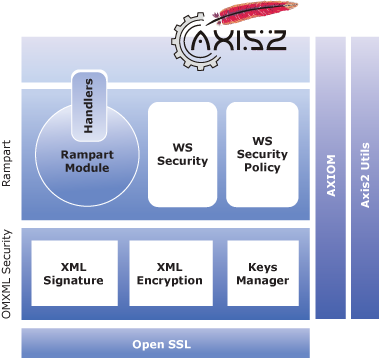
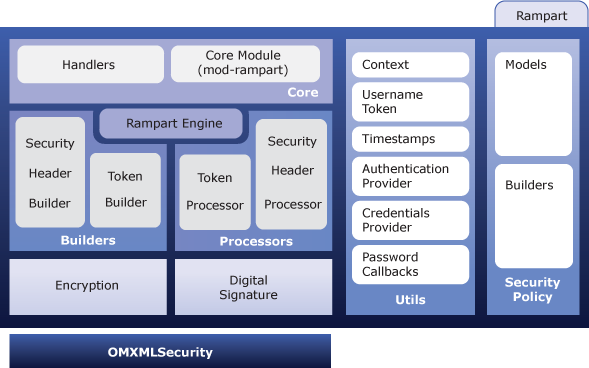
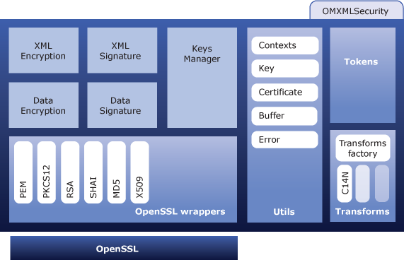

This document is intended to be a reference manual for Apache Rampart/C.
For further details on Axis2/C please refer the Apache Axis2/C manual
In a very simple view, Rampart/C consists of a core module and packages related to WS-Security and WS-Security Policy. For XML-Encryption and Signature Rampart/C uses OMXMLSecurity. Both Rampart/C and OMXMLSecurity uses Apache AXIOM and Axis2-Util libraries. OpenSSL is used as the crypto library in OMXMLSecurity.
The interface between Rampart/C and Apache Axis2/C engine is the Rampart module called mod_rampart. The module has two handlers, one for the inflow and another for the outflow of the Axis2/C engine. Rampart/C directs messages to it's other components for further security related processing using these handlers.
Handlers are a way of extending capabilities of the core engine. Once the Axis2/C engine calls the invoke() method of the handler, the module can do the necessary processing over the SOAP message. Rampart/C use this mechanism to build/process security related SOAP headers.
Following is a detailed architecture diagram of Rampart/C

Rampart engine is the heart of Rampart/C. It sets security policies that defines the behavior of Rampart/C message processing. These policies are usually read from a selected policy.xml file depending on the message flow, which contains a set of policy assertions.
Rampart/C processes incoming SOAP message using it's processors. There are two processors in Rampart/C.
Similar to processes, Rampart/C uses two builders that builds outgoing messages.
The policy module of Rampart/C acts as the configuration module in
Rampart/C. The policy module has a set of models that represents assertions.
Also there are set of builders that builds these models.
Rampart/C is configured using policy assertions defined in WS-Security Policy specification (1.1 or 1.2). These policies are defined in policy.xml files. The client side policies are defined in a seperate policy.xml file located in the client's repository. The service's policies are defined in the services.xml file.
Rampart utilities groups different entities that cater for different purposes. Following is a brief description of major components inside utilities
For XML cryptographic purposes Rampart/C uses OMXMLSecurity, which is a library written on top of Apache AXIOM. If a particular SOAP message needs to be encrypted or signed, Rampart/C get the work done through the OMXMLSecurity. Following are the functionalities of OMXMLSecurity.
Following diagram shows the architecture of OMXMLSecurity
Please send your feedback to the Apache Axis2/C developer mailing list (rampart-c-dev@ws.apache.org). Subscription details are available on the Rampart site.